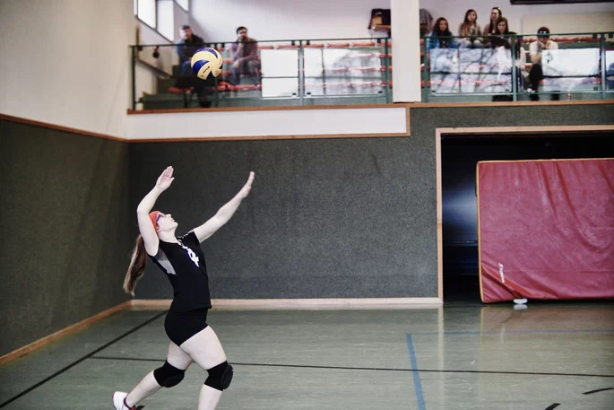
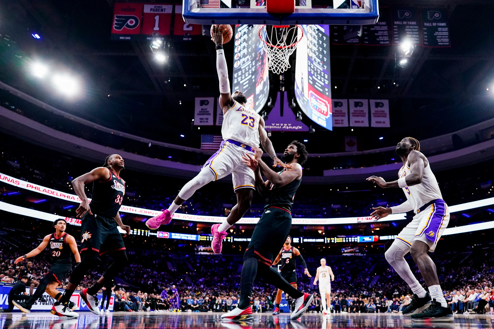
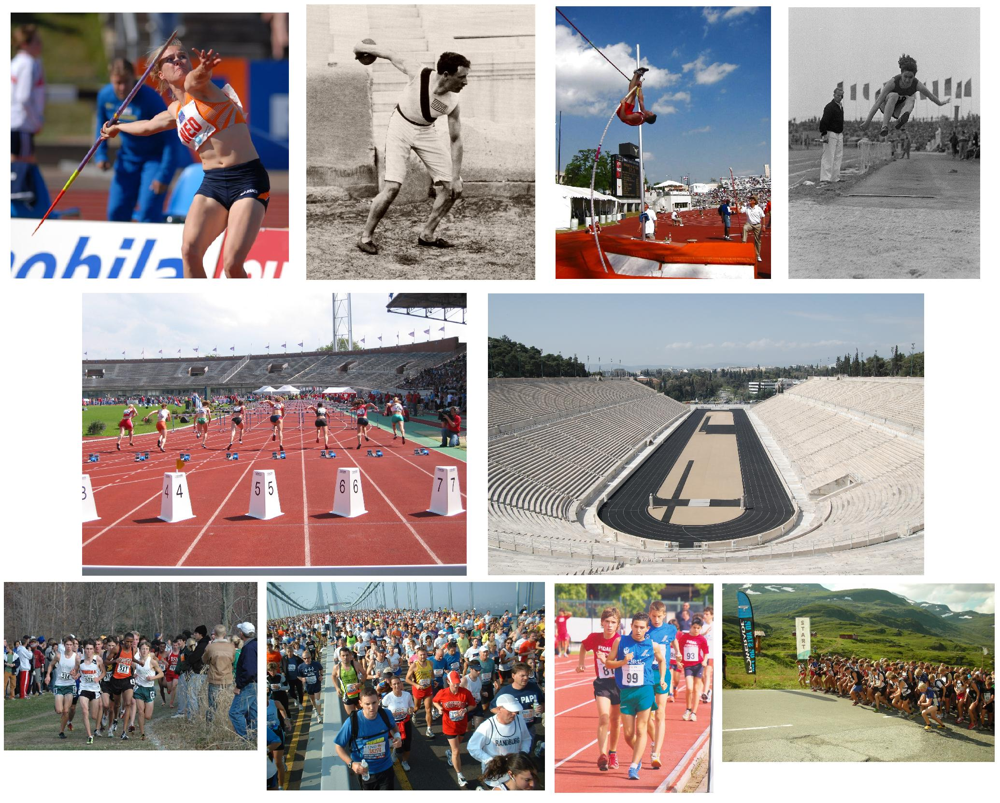

Futbol
El fútbol es un deporte colectivo donde dos equipos se enfrentan y tratan de introducir un balón en la meta del equipo rival. Para ello, los jugadores se sirven de cualquier parte del cuerpo, menos los brazos y manos.
El fútbol es un deporte colectivo donde dos equipos se enfrentan y tratan de introducir un balón en la meta del equipo rival. Para ello, los jugadores se sirven de cualquier parte del cuerpo, menos los brazos y manos.
vóley es un deporte que consiste en el encuentro de dos equipos compuesto por seis jugadores cada uno. Se enfrentan en una cancha dividida por una red o malla sobre la cual deben pasar una pelota a fin de que toque el suelo del campo contrario para hacer una anotación.

El basquetbol, también conocido como baloncesto o básquet, es un deporte de competición por equipos. Su objetivo principal es insertar el balón con las manos en una canasta elevada en el lado opuesto del campo, mientras que el equipo contrario defiende para evitar que el balón entre en su canasta. Este deporte, que combina habilidades físicas y estrategia, se juega en una cancha rectangular dividida en dos mitades, cada una con su propia canasta.

El atletismo es un deporte olímpico que agrupa numerosas disciplinas. El término atletismo deriva de la palabra griega athlon que significa competencia o combate. En este conjunto de prácticas deportivas se busca superar a los contrarios en velocidad o en resistencia, ya sea en distancia o en mayor altura. Este deporte es considerado el deporte organizado más antiguo del mundo.
